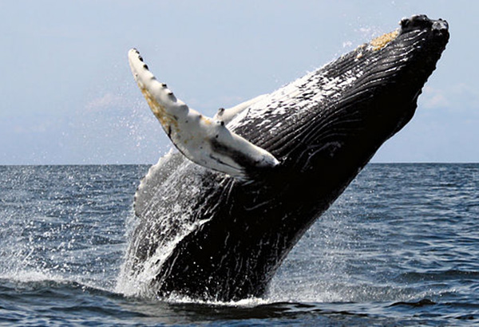
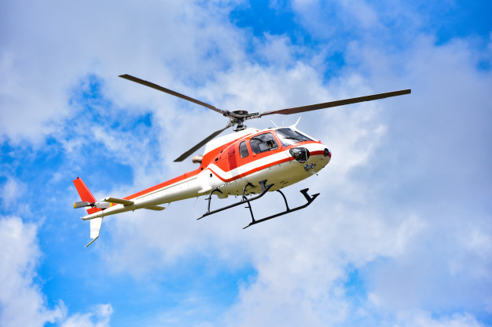

Project Portfolio

Project 3: Biomimicry


I was inspired by the tubercles on humpback whale flippers, which help improve lift and maneuverability. As shown in the images and video, I added small bumps to the Chopper's helicopter blades to imitate these tubercles. They can improve airflow, delay stalling, reduce drag, and potentially lower noise by reducing turbulence. However, I noticed no decrease in noise. Because of the Lego kit's scale, materials, motor, and fixed blade geometry, the design is mainly aesthetic and cannot realistically reproduce the full aerodynamic benefits of whale tubercles.